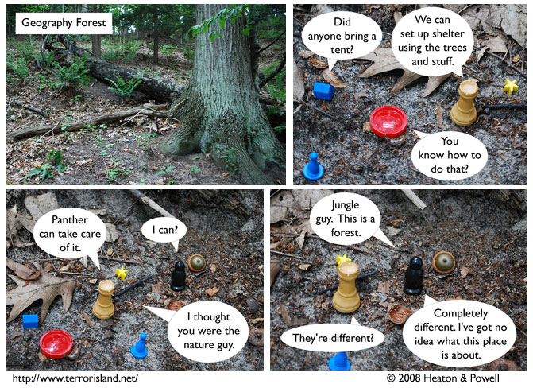

Strip #341
— Monday, August 18, 2008
There is also a Geography Lake and a Geography Tundra, FYI.
Notes, Thoughts, &c.
Ben’s Notes
That hill in the forest was actually more slippery than it looked. True story.
By the way, I’m back in California now, so the non-canonical strips of last week shouldn’t need to continue.
Lewis’s Notes
You may not be able to tell, but Panther is so confused by the forest that he is accidentally addressing his comments to the nearby acorn, which he is mistaking for Stephen.